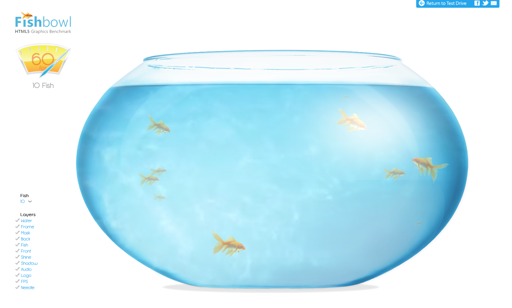
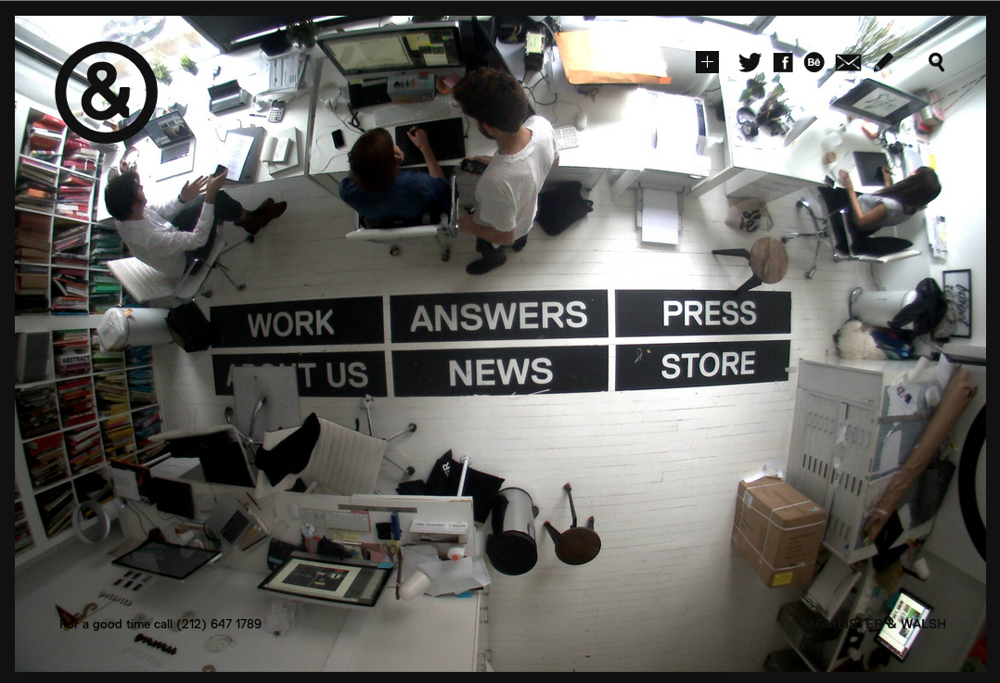
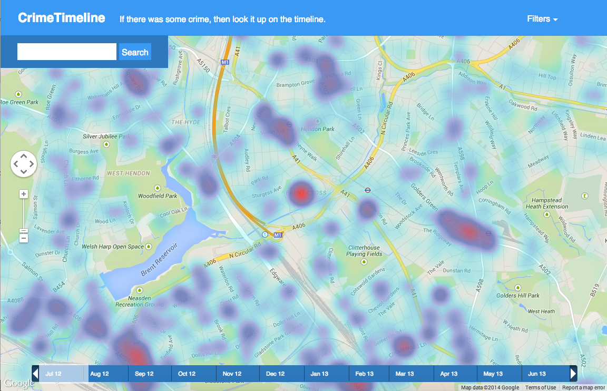

Plural App.

Plural App organizes many different social media outlets and news sources into one easy to navigate site. The left sidebar pulls out to show links to each of the sources which you can customize. It then displays those websites contents in a clean easy to read format. I really like how everything can be streamlined into one site to log onto. I am however slightly weirded out about logging in to my accounts on this page but in theory it seems like a nice concept.
HTML 5 Fish Bowl
Microsoft came up with a neat way to show off how many elements thier internet explorer browser can handle by using a fish bowl qith adjustable quantities of fish.
Github Student Pack
Github has teamed up with a bunch of software companies to give students access to many awesome services including things such as a free .me domain name and access to powerful game engine software.
Sagmeister Walsh Studio
Their studio has an awesome live photo feed that updates every few mintutes, I want to be able to apply this sort of element to my page to show my process and have an open source take on design.
Internet Map

Smithsonian has an awesome map of every page on the internet. Apparently each page is only 19 links away from each other.
Crime Timeline
Crime timeline uses java script and user inputed data along with google maps to show crime in certain areas. Obviously being in baltimore this map can be pretty colorful.
Feedly
I didn't know much about rss feeds and using them to acess news before this class. I really enhoy feedys interface for browsing by subject and being able to tag favorite news sources.
Evernote Web Service

Evernote released a beta for an all in browser version of their app. This had made tings super easy for me to hold my notes and lists in a consistent service that goes between all of my devices. I think they were able to achieve a good unified experience.
Audio Sauna Online Synth

Audio sauna is an online synthesizer that allows anyone to make midid music within their browser. Software for doing this can cost upwards of 1000$ so making an open application like this is really cool to me. It runs on Java and flash.
Drag and Throw Javascript

This neat javascript property allows users to simulate motion. Flicking objects across an active area and have them re-align to the grid after moving.
Bruno Imbrizi Expiriments

Before this class I found a cool use of javascript that allowed users to interact with different meshes and forms that this guy defined. It was a neat use of pure code.
d3.js

D3 is this awesome javascript plugin that lets you input graph data and animate it on your webpages. Great for showing statistics and other infographs using flexible code to animate the graphs.
Kaleidoscope app
Kaliedscope is a cool application that will analyze different types and versions of files and compare the differences between the two. It will let you know if you have duplicate files or your files are larger / smaller or the wrong size. Great for when you are working on multiple versions of a project and want to see everything that has changed from one interation to another.
Bartender

Bartender is an application I started using recenlty to keep all of the processes running on my computer neatly organized into one small icon in the menu bar. Making for a cleaner UI as I am working. It's funny how the little things add up for me in terms of keeping things organized and tidy.
Baltimore social map

In this TED talk Dave Troy has started to create maps of what interests people have on twitter and how they are connected in a large urban environment. By loocing at the trending topics and hashtags by different demographics he is able to see what people of different ethnicitys do and do not have in common. Alowing this data to be used to find common intrest between communities.
Post 15
About*
Post 16
About*